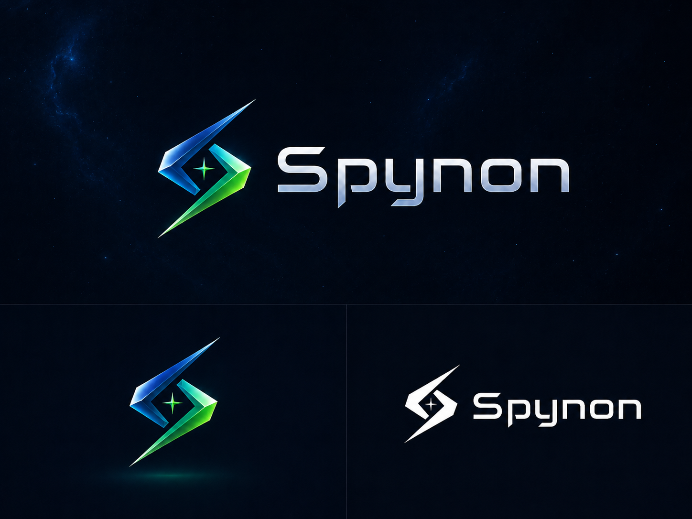

Spynon · derivados técnicos
Mesma arte aprovada, sem redesenho. Os SVGs incorporam o PNG original: são contêineres escaláveis, não vetores reconstruídos nem recortes transparentes.
A superfície galáxia foi preservada inclusive sobre contexto claro. Não houve inversão de cor, substituição de tipografia ou reconstrução de contorno.
Horizontal colorida
Viewport 310 · 185 · 900 · 340 — pixels do original; proporção preservada.
Símbolo colorido
Viewport 210 · 675 · 335 · 335 — pixels do original; proporção preservada.
Horizontal monocromática
Viewport 825 · 744 · 535 · 205 — pixels do original; proporção preservada.
Comparar com a prancha original completa

Fidelidade técnica não significa aprovação do uso no HUD. Próxima etapa: aplicação discreta e revisão visual.